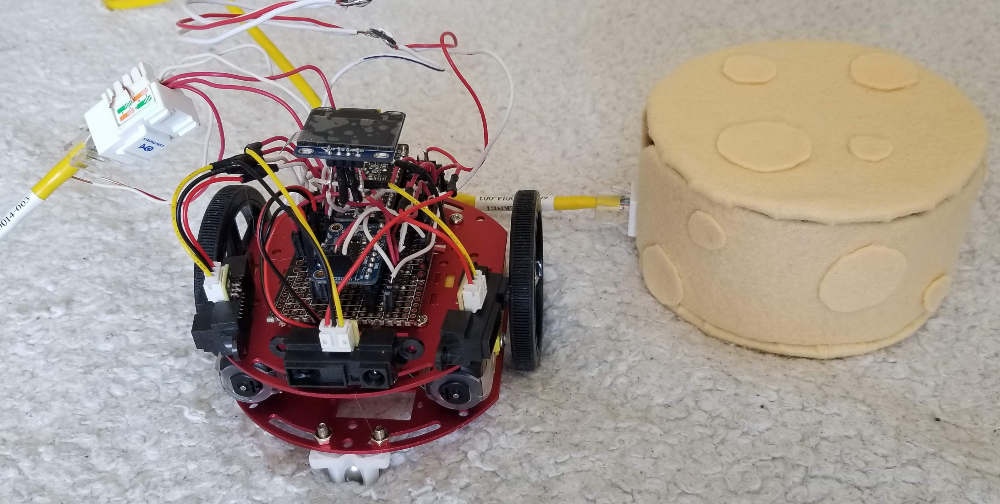
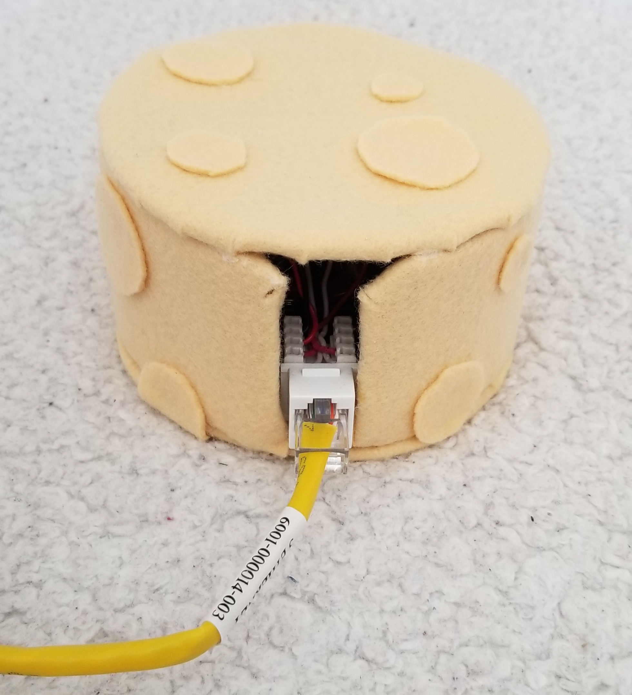
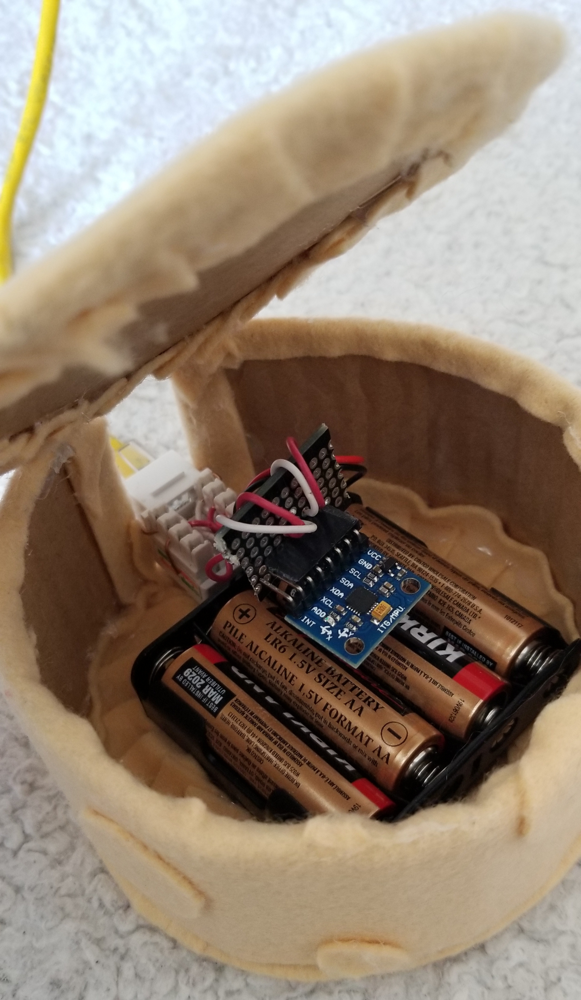
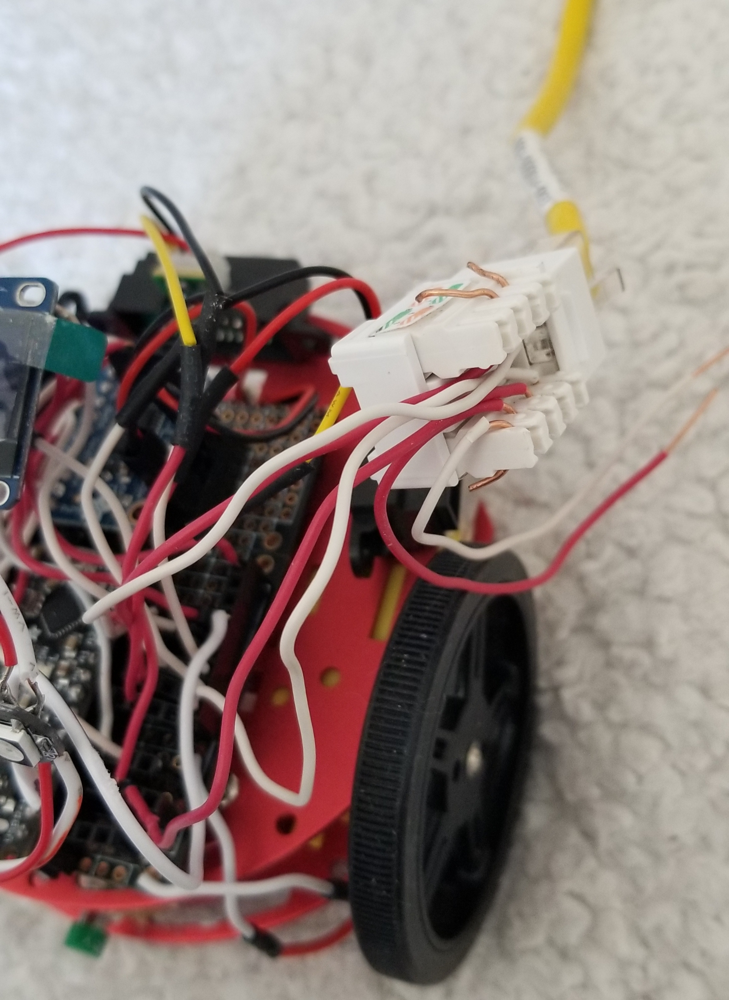
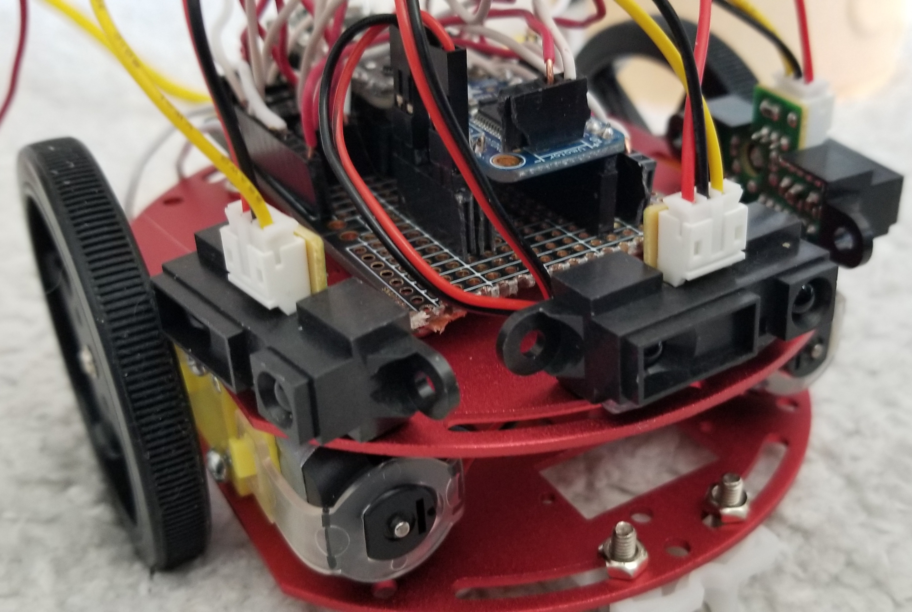
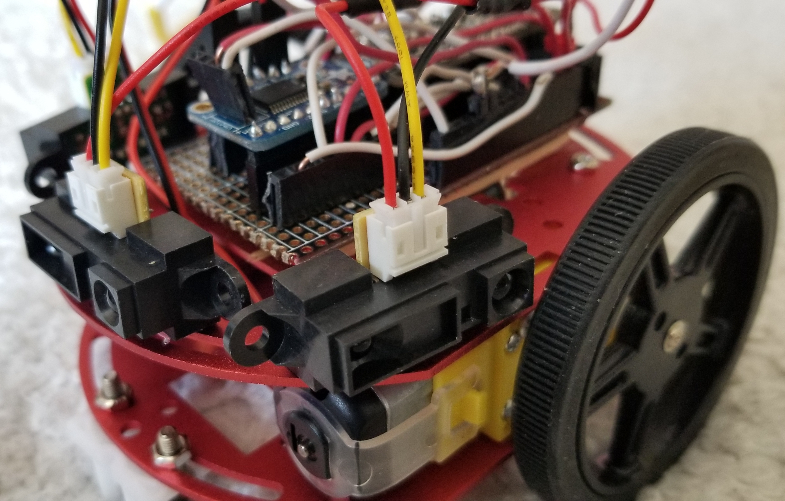
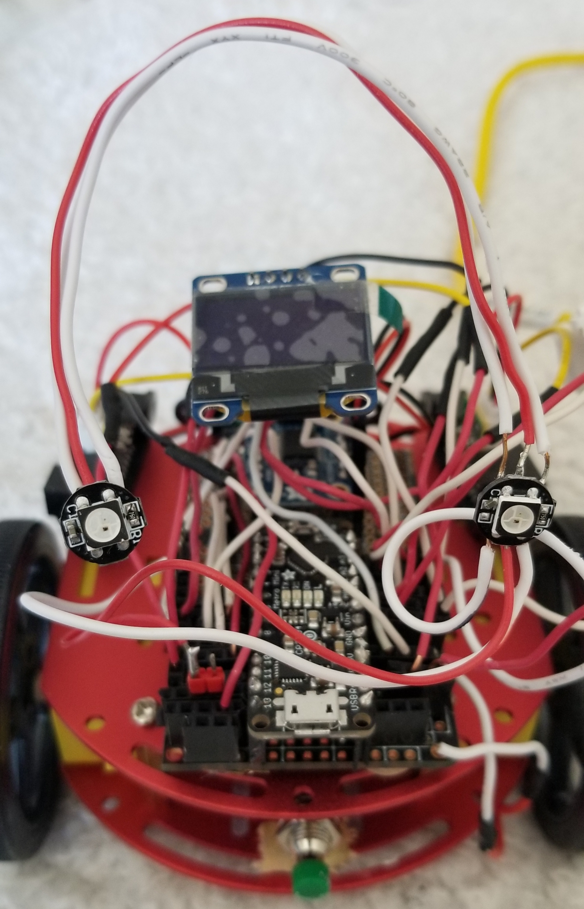
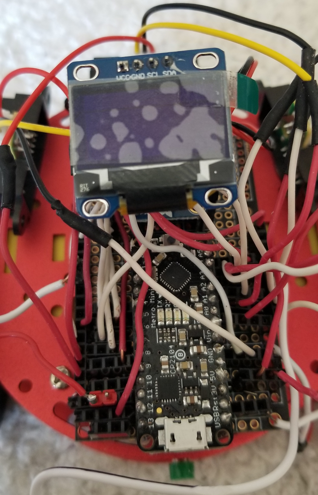

Home
Upgrade
Brushbot & LEDs
Micro Box
Serial UI
Prototype
Final
Reading #1
Reading #2
Quiz
Final Project
Recap
My prototype of my project ended with my chassis robot being attached with a metro mini, stepper driver motors, 3 distance sensors, a graphic display, IMU, and neopixels. I currenly had a basic program that allowed all hardware parts to function unanimously, which also included some functions that allowed one part to affect another. In this program, my IMU controlled my neopixels, while displaying it's data on to the graphic display. My 3 distance sensors, when triggered at a specific distance, would cause the chassis bot to move forward.
(Refer back to "Prototype" page for more details)
Proposal A: Prototype Upgrade
The proposal I chose to accomplish for my final was Proposal A: Prototype Upgrade. The upgrades I plan to make are more software focused. These upgrades include:
- import an image on the graphic display to act as the bot's emotion --> graphic display will be triggered whenever the distance sensors detect something is too close to it
- - images will mostly likely just be emotions --> (1) scared emotion when something is too close; (2) happy emotion when it's alone and not too close to anything
- - neopixels will also blink when distance sensors detect something is too close
- IMU will act as a remote to control the chassis in real time --> if I move the IMU on the x-axis (at a certain interval since the IMU is very sensitive) the bot will move forward, if I tilt or move (I'm unsure which will would be better at the moment) the IMU to the right, the bot will turn right, and if I tilt/move the IMU left, the bot will turn left.
- have the graphic display display a right, left or forward arrow when the IMU is triggering a right, left or forward response to the chassis
- [aesthetics of my mouse bot to look like a mouse will be my last step depending on whether or not I will have enough time to do so (this is not the biggest priority)]
Hardware Parts (no changes made)








Software Upgrades
Success/Failures
Artist Statement